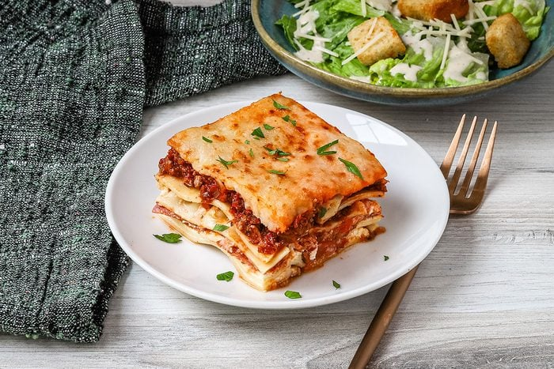

Home
Lasagna

Enjoy a comforting homemade lasagna featuring a flavorful meat sauce, tender pasta layers, and a blend of melted cheeses. Simple to prepare and perfect for gatherings, this recipe bakes up golden and bubbly every time.
This lasagna starts with a savory meat sauce made from ground beef simmered with tomatoes, garlic, and aromatic herbs, creating a rich and flavorful base. Layered between tender sheets of pasta, the sauce is complemented by a creamy mixture of ricotta and mozzarella cheeses that melt perfectly in the oven. Each bite delivers a balanced combination of hearty meat, smooth cheese, and al dente noodles.
Baked until golden and bubbly, this dish is both comforting and satisfying — perfect for family dinners or special occasions. It’s easy to prepare in advance and freezes well, making it an excellent choice for busy households. Whether served fresh from the oven or reheated, this lasagna never fails to impress with its classic flavors and satisfying texture.
Ingredients
- 1 pound ground beef
- 1 small onion, finely chopped
- 2 cloves garlic, minced
- 1 (24-ounce) jar marinara or pasta sauce
- 1 (15-ounce) container ricotta cheese
- 2 cups shredded mozzarella cheese
- 1/2 cup grated Parmesan cheese
- 1 large egg
- 9 lasagna noodles, cooked and drained
- 1 tablespoon olive oil
- 1 teaspoon dried basil
- 1 teaspoon dried oregano
- Salt and pepper to taste
Steps
- Preheat your oven to 375°F (190°C).
- In a large skillet, heat olive oil over medium heat. Add chopped onion and garlic, sauté until softened.
- Add the ground beef and cook until browned. Drain excess fat.
- Stir in marinara sauce, dried basil, oregano, salt, and pepper. Simmer for about 10 minutes.
- In a separate bowl, combine ricotta cheese, egg, and half of the grated Parmesan cheese. Mix well.
- Spread a thin layer of meat sauce in the bottom of a baking dish.
- Layer 3 cooked lasagna noodles over the sauce.
- Spread one-third of the ricotta mixture over the noodles.
- Sprinkle one-third of the shredded mozzarella cheese on top.
- Repeat layers (sauce, noodles, ricotta, mozzarella) two more times.
- Finish with a final layer of meat sauce and remaining mozzarella and Parmesan cheese.
- Cover the dish with foil and bake for 25 minutes.
- Remove the foil and bake an additional 25 minutes until the cheese is bubbly and golden.
- Let the lasagna rest for 10-15 minutes before serving.